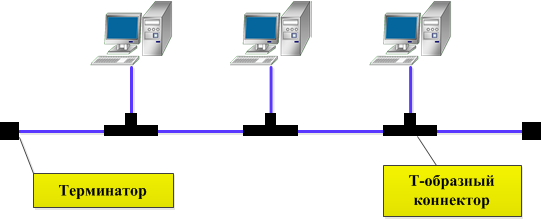
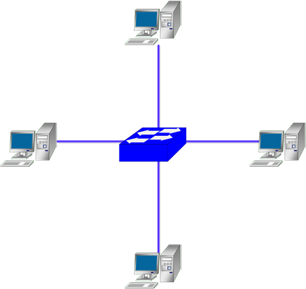
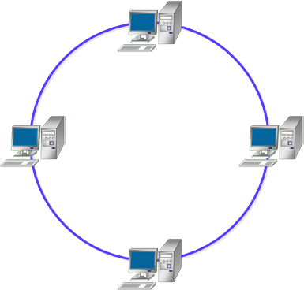
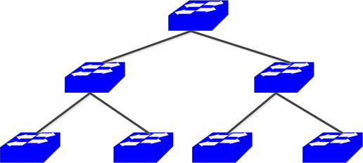
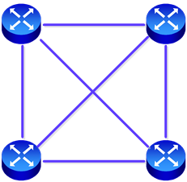
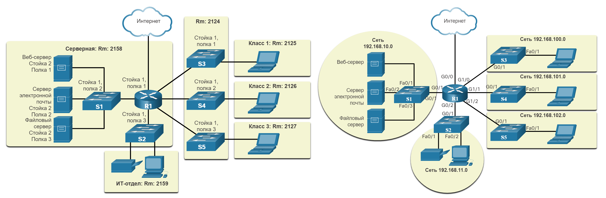
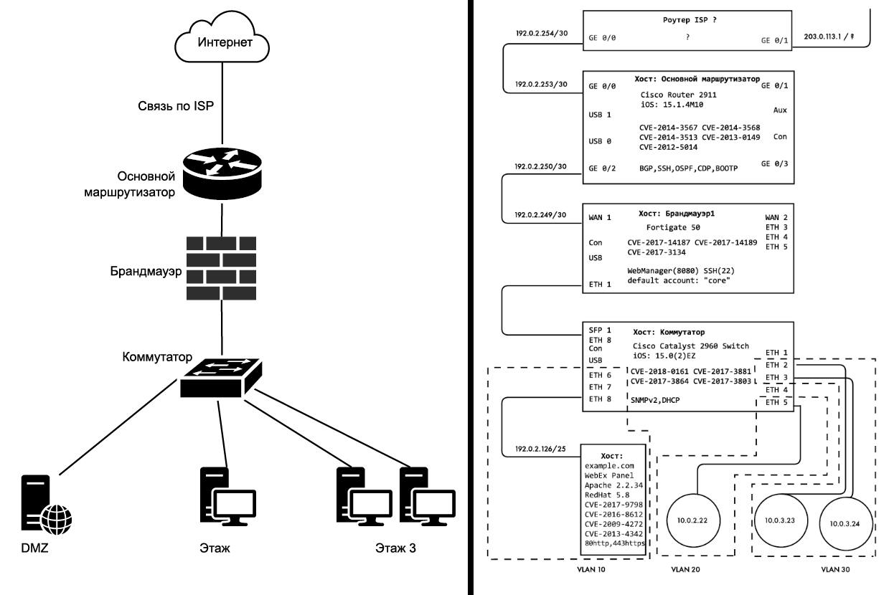

Топологии сети
Топологией сети называют конфигурацию графа, в котором вершинами являются конечные (ПК и серверы) и промежуточные узлы (коммутаторы, маршрутизаторы), а рёбрами — проводная или беспроводная среда передачи данных. От выбора топологии зависят характеристики сети, например, надёжность и масштабируемость.
Различают полносвязные и неполносвязные конфигурации. При полносвязной топологии каждый компьютер соединён с остальными, однако на практике это слишком громоздко и дорого, так как требует огромного количества портов и кабелей. Все другие топологии являются неполносвязными и требуют промежуточных узлов для передачи данных.
Общая шина (Bus)
Является частным случаем "Звезды", так как все устройства подключены к единому средству связи — центральному кабелю (обычно коаксиальному), к которому подключаются все компьютеры. Данные передаются по шине в одном направлении, и устройства ищут свой адрес в данных. В каждый момент времени только один компьютер может передавать данные, поэтому пропускная способность делится между всеми узлами.
Преимущества:
- Простота настройки и расширения.
- Требуется меньше кабелей, чем для других топологий.
Недостатки:
- Если выходит из строя основной кабель, выходит из строя вся сеть.
- Производительность снижается по мере добавления новых устройств.
- Ограниченная длина кабеля и количество устройств.

Звезда (Star)
Каждый компьютер подключается к центральному устройству (концентратору, коммутатору или маршрутизатору). Центральная точка отвечает за передачу и направление данных между устройствами в сети.
Преимущества:
- Легко добавлять или удалять устройства, не затрагивая остальную сеть.
- Если одно устройство выходит из строя, это не влияет на всю сеть.
- Централизованное управление.
Недостатки:
- Требуется больше кабелей, чем в шинной топологии.
- Если центральный узел выходит из строя, падает вся сеть.
- Ограниченный радиус действия: расстояние зависит от длины кабелей до центрального узла, а длинные кабели могут увеличить задержку.

Кольцо (Ring)
Устройства подключаются по круговой схеме, при этом у каждого устройства есть ровно два соседа. Данные передаются от одного компьютера к другому, проходя через каждое устройство до места назначения. Такая структура упрощает контроль доставки и отслеживание вышедших из строя узлов, а в некоторых реализациях данные могут передаваться в двух направлениях. Используется в технологиях Token Ring и FDDI.
Преимущества:
- Равный доступ к ресурсам для всех устройств.
- Может справляться с большими нагрузками на трафик.
Недостатки:
- Добавление или удаление устройств может привести к нарушению работы сети.
- Если одно устройство выходит из строя, это может повлиять на всю сеть.
- Передача данных может быть медленной из-за циклической структуры.

Иерархическая звезда / Дерево (Tree)
Имеет разветвленную структуру и представляет собой сеть, состоящую из нескольких подсетей, подключенных по схеме Звезда к центральным узлам более высокого уровня. Пример: соединение домашних сетей в одном здании через интернет-провайдера.
Преимущества:
- Хорошо масштабируемая сеть (большой потенциал для расширения).
- Легко найти неисправности.
Недостатки:
- Зависимость нижестоящих узлов от вышестоящих (отказ вышестоящего узла ведет к отказу всей ветки).
- Требуется много кабеля.

Ячеистая (Mesh) и Полносвязная (Full Mesh)
Ячеистая топология происходит из полносвязной путём удаления некоторых связей (частичная сетка). Полносвязная топология (Full Mesh) соединяет каждое устройство со всеми остальными напрямую. Это самая надежная схема, так как к одному узлу подключены как минимум 2 соседних устройства, однако она крайне требовательна к ресурсам.
Преимущества:
- Высокая отказоустойчивость и избыточность.
- Хорошо масштабируется и устраняет необходимость в центральном узле.
Недостатки:
- Требуется огромное количество кабелей, что делает её очень дорогостоящей.
- Сложность в настройке, обслуживании и физической реализации.

Смешанная / Гибридная (Hybrid)
Представляет собой произвольное соединение компьютеров, объединяя две или более различных топологий в единой сети. Используется в крупных компаниях для адаптации под конкретные требования производительности.
Преимущества:
- Может быть адаптирована к конкретным потребностям.
- Оптимизирует сильные стороны различных топологий.
Недостатки:
- Сложный процесс управления и настройки.
- Дороже, чем классические базовые топологии.
Карта сети
Топологические схемы (карты) дают наглядное представление о том, какие технические ресурсы входят в сеть и как они соединены. Диаграмма может описывать физическое расположение оборудования (пример слева) или логику соединения и взаимодействия устройств (пример справа).

Отсутствие качественной карты сети — частая проблема в сфере кибербезопасности. Качественная карта сети включает в себя:
- Все точки доступа узла в сети: виды интерфейсов, наличие фильтрации (NAC/MAC), статус доступа к консоли, виды физической безопасности (замки), расположение интерфейса управления, IP- и MAC-адреса.
- Граничные шлюзы, переходы и точки выхода: количество провайдеров, использование надежных подключений (TIC/MIS), пропускная способность, тип канала связи (оптоволокно, Ethernet и др.), физические и беспроводные пути входа/выхода.
- Структуру и схему сети: имена, назначение и размер подсетей (использование CIDR), наличие VLAN, лимиты пулов, иерархия сети (плоская, сегментированная, защитные слои).
- Хосты и узлы сети: названия, версии ОС, используемые открытые службы/порты, средства безопасности, наличие общеизвестных уязвимостей (CVE).
- Физическую и логическую архитектуру: расположение дата-центра, наличие Ethernet в холле, доступность Wi-Fi снаружи, видимость экранов с улицы, сегментация гостевых сетей, правила брандмауэра и ACL, зона DMZ, облачные сервисы и архитектура VPN/удаленного доступа.

Примеры бесполезной и полезной карты сети.
Многие инструменты злоумышленников для отображения сети "шумные" (например, активное сканирование Nmap) и легко обнаруживаются системами безопасности. Опытные злоумышленники применяют пассивное отображение: сбор информации без прямого взаимодействия. Ещё один метод — прослушивание пакетов в беспорядочном (promiscuous) режиме интерфейса, при котором записывается и проверяется весь проходящий сетевой трафик, что позволяет узнать топологию, соседей и протоколы без активных запросов.